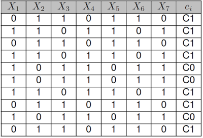

MCEC algorithm
Java implementation of an information-theoretic algorithm that combines Multivariate Correlations with Early Classification
Program description
MCEC (Multivariate Correlations for Early Classification) algorithm is a Java implementation of an information-theoretic method for examining the early classification opportunity in a dataset. This dataset contains univariate or multivariate time series together with their respective class labels. The program can be downloaded here.
Input
The input file must be in comma-separated values (CSV) format, containing the time series and the respective class labels.
- Each line is expected to correspond to one instance.
- The columns must include the features grouped per time point, chronologically organized. The last column corresponds to the class attribute.
- The first line is the header, containing the names of the attributes and the associated time point. Example: "Att1_TP1", "Att2_TP1", "Att1_TP2", "Att2_TP2", "class".
Dataset example:
X1_1, X2_1, X1_2, X2_2, class
TRUE, FALSE, FALSE, FALSE, C1
FALSE, FALSE, TRUE, FALSE, C0
TRUE, TRUE, FALSE, FALSE, C0
TRUE, FALSE, TRUE, TRUE, C1
(...)
Output
The outcomes of the difference in entropy, log-likelihood, MDL score, AIC score and classification accuracy, all for n = {1, ..., L} are outputted from the Java program in text files. The implementation uses some functionalities of Weka Data Mining Software and an additional Matlab script is provided for generating the five graphs for representing the results.
Observations
The file Appendix_SyntheticExampleOfMCECalgorithm.pdf includes a detailed explanation of the proposed method applied to a synthetically generated dataset. For clarification purposes, the functioning of the algorithm is expounded through calculation descriptions and graph analysis.
The proposed implementation provides the Markov Lag, an alternative to the standard Early Classification approach. Basically, instead of analysing the correlations from the initial time point until the last, it uses the inverse order (from the last to the first one). In this case, the idea is to check of how much information from the closest past we need, in order to obtain a satisfactory prediction.
Libraries
MCEC algorithm depends on two external libraries:
Usage
Execute the jar file:
$ java -jar MCECalgorithm.jar [dataset-filename].csv [N] [optionClass] [MarkovLag]
[dataset-filename] Type: String - Name of the dataset file to be analysed.
[N] Type: Integer - Number of features per time point.
[optionClass] Type: Boolean - With classification analysis (TRUE)
or without classification analysis (FALSE).
[MarkovLag] Type: Boolean - With Markov lag approach (TRUE)
or with standard Early Classification (FALSE).
Synthetic dataset example
The syntheticTest.csv.csv dataset example corresponds to:

The command for analysing the early classification opportunity is
$ java -jar MCECalgorithm.jar syntheticTest.csv 1 TRUE FALSEand produces the following files:
- dataEntropyDiff.txt, with the difference in entropy results
- dataLL.csv, with the log-likelihood results
- dataMDL.txt, with the MDL score results
- dataAIC.txt, with the AIC score results
- classResultsL.txt, with the classification accuracy analysis
-p 1 and use the log-likelihood (LL) score with -s ll to ensure that a maximum number of dependences is retrieved.
The command to learn the network with the 50 observations file is
$ java -jar tDBN-0.1.3.jar -i synth-N50.csv -p 1 -s lland produces the following output:
Evaluating network with LL score.
Number of networks with max score: 2
Finding a maximum branching.
Network score: 202.75732463763217
-----------------
X1[0] -> X0[1]
X2[0] -> X1[1]
X3[0] -> X2[1]
X2[0] -> X3[1]
X3[0] -> X4[1]
X0[1] -> X1[1]
X3[1] -> X2[1]
X0[1] -> X3[1]
X3[1] -> X4[1]
Activating the -d switch to directly output in dot format, and redirecting into Graphviz...
$ java -jar tDBN-0.1.3.jar -i synth-N50.csv -p 1 -s ll -d | dot -Tpng -o N50.png...produces this graph:

Although there are some matches (X2[0]->X3[1] and X3[0]->X4[1]), the learnt network is very different from the original, because the number of observations is low.
Using the 250 observations file as input to tDBN ...
$ java -jar tDBN-0.1.3.jar -i synth-N250.csv -p 1 -s llEvaluating network with LL score.
Number of networks with max score: 1
Finding a maximum branching.
Network score: 829.3579534531533
-----------------
X0[0] -> X0[1]
X1[0] -> X1[1]
X4[0] -> X2[1]
X2[0] -> X3[1]
X3[0] -> X4[1]
X1[1] -> X0[1]
X1[1] -> X2[1]
X2[1] -> X3[1]
X2[1] -> X4[1]
An improved visual representation shows the evolution of the learnt networks with the number of observations N (dashed edges are incorrect):
 |
 |
 |